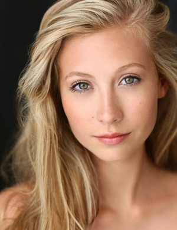

About Me
 Welcome to my "About Me" page! I am very pleased to see that you have an interest in getting to know who I am on a professional level. I am currently a senior at Armstrong Jr/Sr High School, and I plan on attending Clarion University of Pennsylvania for Communications and Broadcast Journalism next fall. I am an honor roll student, as in previous years, and I am very involved in organizations not only in school, but outside of school as well. I have been a lifeguard at our local pool for three summers now, where I teach swim lessons and watch over the patrons for their own safety. During the year, I work as a model for various companies on numerous circumstances. The most recent of which is that of Saks Fifth Avenue. I spend a lot of my time helping with the community by being an active member in Youth Group, Student Council, Interact Club, etc. For the remainder of my senior year, my main goals are to be inducted into National Honors Society and to remain a honor student. When I graduate, my goals are to go to Clarion University of Pennsylvania where I will broaden my education, get a good, stable job, and continue my modeling career.